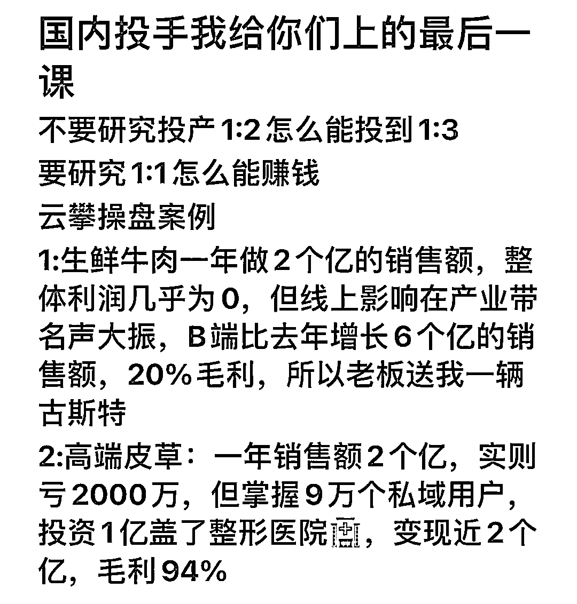
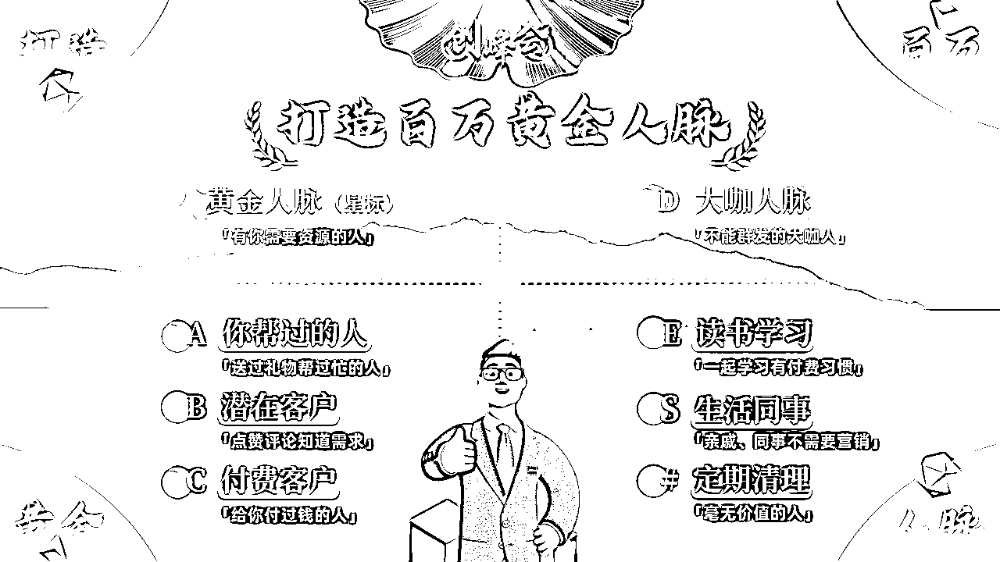
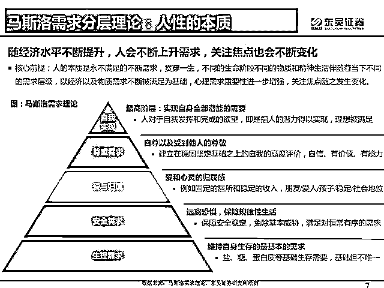
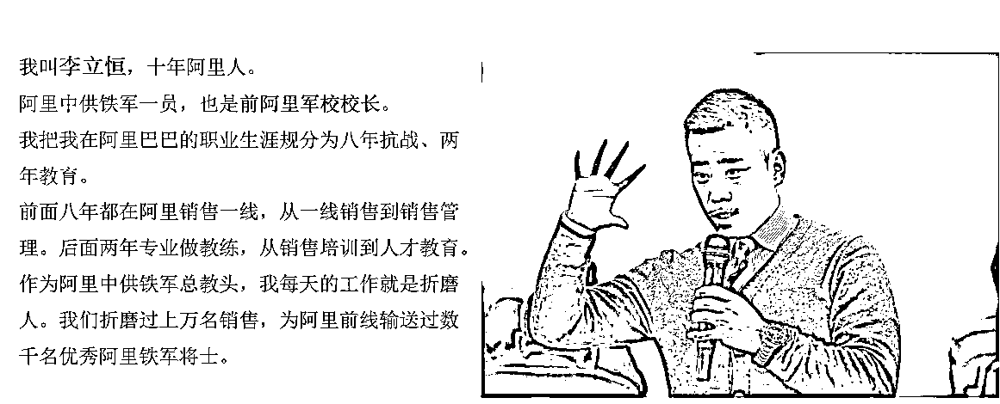

来源：https://tuhr2ryzy9.feishu.cn/docx/YdTkdmxfmoFpjRxCcmXcgANInTg
私域流量营销天书皆为拱卒&房校原创，转载请征得本人同意
一个前提+四个基本点+神之一手
我做私域曾经创造过两次3天内收款200W+的记录，22年一次、23年一次....
在我创造这些方法论之前，并没有看过一些关于私域流量营销的书、理论、视频课程，都是顺着人性从战略角度进行的设计
所谓战略，就是基于宏观性和长远性，把各种纷繁复杂的要素按轻重缓急、先后次序进行整理排列，然后拿出最有效的行动方案，真正的战略家是要通盘考虑每一个阶段、每一个动作对于整体的贡献率。
所以我不是理论家，也不是空谈，是切实的实战家，战略家
那么从今天开始，我会把我的一些心法结合看到的（现在去看的）理论、书籍，尽量用书面化的语言和步骤呈现出来
但是说实话，这个东西得靠悟和实践，与此同时更多的精力应该放到搞流量上，因为私域流量营销只是锦上添花，做不到雪中送炭，多把精力放在搞流量上，再把精力放在搞留量上，不要把顺序弄反，顺序弄完一切扯蛋；当然产品力更是核心中的核心，你能帮助别人多赚多少钱，你就能赚到更多钱;赚钱不是从别人兜里掏钱，而是多让他赚1000，你拿多出来的1000的100。可惜很多人也是把顺序弄反了
我今天把这些核心的赚钱技巧毫无保留分享出来，也不是证明我比别人厉害，只是希望能帮到大家，希望大家都能超越我
发售的前提，是让用户预先感知到你产品/服务的价值，不然无论你的东西多么牛逼
你冷不丁的咔放出来也没啥用，只是自我感动，毫无艺术可言
当用户感受到你产品或者服务的价值时，要引导用户做出行为决策，例如引导给你点个赞，回复个666，回复个888等等
这个怎么引导，要具体问题具体问题，不同的场景会有不同的方式，所以我开头说了，得“悟”
当然引导用户的行为决策，也有很多技术在里面，比如不同的好友标签，引导的行为肯定要有所差异
不同的场景、不同的用户群体、不同信任程度要做出不同的行为决策引导，只有这样把价值预知到位从而合理的引导用户做出了行为决策，就成功了一半了
势能你可以简单的理解为能量场，你的势能是精神抖擞还是焉了吧唧的，决定了用户怎么看你
就像别人看我们的样子，往往是我们看自己的样子的折射，所以请你铭记这一点，一定要自己先打起精神，把自己的能量提升上来，再谈产品的造势
回到产品发售的造势，造势的目的是什么？答：注意力。用户的注意力在哪里钱就在哪里。所以抖音赚钱呀，因为很多人的注意力整天放到哪里了，时间就在那里了，钱是出卖时间换来的血酬，那自然注意力在哪里钱就在哪里
所以我们要造势，我们要吸引用户的注意力，我们要让他们感知到我们的产品感知到我们的价值
所以这个时候，产品虽然没有发布，但是你要对产品进行造势，例如说出产品牛逼的点、产品的差异化的点、产品能对用户帮助产生价值的点、产品的名人背书的点、产品取得的成绩点等等，占领用户心智产生关注
造势过程中也可以借势或者邀请KOL/KOC助势、关于借势，推荐金枪大叔《借势》这本书，能加深理解
造势过程中，有很多方法可以采用，我做的两次大发售，用的都是倒计时发，层层递减、循序渐进、抽丝剥茧的展开，每天进行一次势能增加，然后发售的时候进行爆发
预售非常重要，甚至我感觉比发售都重要，普通人改变结果，优秀的人改变原因，顶级高手改变模型
发售过程中的高手，就是在预售阶段，已经把客户成交的差不多了，预售的背后是对用户标签管理，造势过程用户心智把握的极大考验
因为在一个前提和造势的过程中，其实潜在用户会跟你的行为，同时做出多个行为决策。那么这个阶段其实很多人你已经知道他对你的产品感兴趣了，那么这部分人就可以提前进行预售了
而且这部分群体，可以给予一定的优惠或者小产品的赠送，进而引导提前转化
预售的过程一定要一对一精细化聊天进行销转，因此这里的每一位用户，都是你的”轻铁杆“用户，值得你去仔细的了解他的需求、他的疑惑、他的问题等等
这个预售过程，往往是转化率极高的，即为有效的，所以在设计倒计时的这几天，其实你应该收的差不多了
当然你要把发售文章或者视频精心打磨好，我的两次发售，文章打磨时间都是超过一周的，这里的每段话，每层逻辑都要推敲思考，牵一发而动全身，至关重要
发售是一场电影的高潮，这是爆发的一个阶段，往往呈现方式是开直播做发售、公众号文章做发售、海报进行发售等等
我个人建议使用公众号文章或者直播，特别是有条件的一定要用直播的形式，因为直播会极大的拉近距离，提升信任感，我们做生意无非究其一生都在跟信息不对称和信用不传递做抗争，凡是能打破信息不对称，能拉近信任的方法都是好方法
如果你是用文章，那就如同预售中说的一样，一定一定得精心打磨，不管是文案还是产品力塑造甚至情绪价值的渲染，都要思考和设计做到极致，追求卓越我们才能创造卓越
关于发售，又有很多小技巧，例如“今天不买明天涨价”、“满多少人涨多少钱”、“买这个送什么东西”、“组团优惠”等等这些设计。这些都是基于人性的，但是还是那句话，具体问题具体分析，不同的销售场景、不同的产品、不同的人群，所用的策略都是不同的。可以多看一些心理学书籍，多看一些史书，启发更多对人性的思考，进而学会顺着人性赚钱，逆着人性让自己的产品让自己值钱。
有始有终才是一场成功的发售，完成了一个前提+三个基本点后，这个时候就是休整战场的时候了，这时特别要注意前三步打好的用户标签，对于不同的标签用户进行不同的销转，例如咨询过很多次，但是没成单的；例如付了定金，还没付尾款的；例如要介绍朋友来，还没介绍的等等
不同的标签用户，这是要进行精细化的跟单追单，把一个前提和三个基本点所触达和有用户行为决策的好友发挥到极致
当然这些公域还有一些没有触达或者行为决策的好友，我们要进行后续反复的触达，这时的触达，就可以屏蔽掉已付费的用户，避免进行打扰，这些小细节也要用心注意
对于公域留存的好友，我们可以不断的释放产品力，释放付费用户的反馈甚至成功案例等等进行一个长周期的转化
这里也要切记不能一根筋，因为无论你的产品再牛逼，肯定对于大部分好友是不太感兴趣的，我们能服务的，也只能是小部分人，放低预期，摒弃玻璃心才能沉下心做好交付
对于每一位付费的用户，一定要认认真真踏踏实实的做好交付，例如我本人，会设置一个专门的VIP微信，所以付费的我都会导到这里，这个微信是我的第一优先级大于个人生活私人微信
为什么要这些，第一，客户确实是上帝，做好服务是我们的根本是第一要义；第二，维护好一个老客户比拉新十个新客户的价值到大的多。
你在成就客户的同时就是在成就自己，你能帮助别人多赚多少钱，你就能赚到更多钱;赚钱不是从别人兜里掏钱，而是多让他赚1000，你拿多出来的1000的100。
所以为什么要讲利他，因为一切基于利他的模型设计，都是多方共赢的结果。
所以神之一手是什么？是客户的终生生命周期价值管理
举例哈，我本人的基本盘是大学生，我现在有接近10w的大学生私域流量，在这个过程中，会产生很多付费大学生产品的用户。
其中一层层筛选，我们把产品服务价值给他做好了，他买了1次还会买其他产品。我们这边有很多，买了创赛资料的，还会买数学建模辅导，还会买保研服务，还会买付费内推还会买考研伴学或者留学服务，还会买我的论文辅导，等他毕业了还会买关于赚钱的实战营，甚至还会买终极产品合伙人等等
这一路无疑是对他帮助很大，对他产生了价值，他有了信任才会持续跟我们的。只要基数最高大，服务足够好，给客户产生的价值足够大，这一整个业务链条的筛选人数也是很可观的。我们这边甚至有部分用户，单人产值过50w（5年）
所以我们持续不断的大学生私域，可以让我公司估值越来越高，盘子越来越大，流量越来越多，例如别人在搞创业粉的时候，我不搞，我去培养和筛选，虽然时间很长，但是回报率极大。
所以很多人看不懂我的业务盘，看不懂我是怎么做到私域千万的。就是因为这“神之一手”这个看不见的手，可以把利益与价值发挥到极致，进而把客单+终生价值挖掘到极致。
分享一个图片，看不见的“战争"才是最牛的，能被看见的都是高手的冰山一角

我们想在私域做到高销转率，就必须进行用户心智的管理
精准且有效的营销才能真正起到作用，就像孙子兵法所说“不战则已一战则平”
这里我分享1+7技巧
做私域，首先得会打标签，请按照以下加星和ABCDES#去进行私域流量的管理

然后我们才能谈怎么提升粘性和转化率，在分享这点之前，我想特别强调的是，强大自己是解决所有问题的根源
只有自己走正道且有成绩，别人才会信服，现在已经过了那种吹吹牛逼pp图就能让用户买单的年代了；现在用户看的是实实在在的价值和实力；有了实力，那最重要的就是利他，是真正的能给消费者解决问题，创造价值；我经常说，我们赚钱，是帮用户多赚1000，自己拿100，而不是从用户口袋里掏出100了，是否能为用户创造超预期的价值，这才是粘性高、转化率高的根本
关于粘性，我们要理解“触达”这两个字，如果没有触达，就没法谈粘性；在公域里，粉丝是平台的，很能多次精准的触达到目标客户，但是在微信就可以
微信朋友圈就是第一大武器
我们假设微信是一个餐馆，那么你的昵称就是餐馆的名字；你的个性签名就是餐馆介绍；你的朋友圈内容就是菜品；你的公众号就是宣传单；你的视频号就是餐馆里的节目；你的话术就是和消费者的交流；你的活动就是派头噱头苗头里的“噱头”
这么打比方，相信你就可以非常形象的了解微信私域流量了
你的餐馆名字要好记有深意
餐馆介绍呢要有特色不能千篇一律
至于菜品那就更重要了，要有展现实力的，要有甜品，要有硬菜，是不是的可以来点麻辣的来点酸的等等，菜品不一天不能给客户上太多，而且要经常升级的自己做饭水平
宣传单要力求精简，每一条内容都是直入消费者心里的
对于餐厅的节目可以不定期的表演表演，让消费者对你的餐厅有更多的注意力
话术就是与消费者的交流，一个是让客户得情绪价值得到满足另一个就是得学会让客户买单或者充卡
活动就是餐馆的促销、拉新、营销等等的技巧
我如果讲理论，可能大家记不住，讲了也白讲，只有自己“悟”出来的东西，才是真正管用的；但是通过我的这个故事这个比方，我相信大家可以记一辈子，而且深入脑髓
以上就是提升粘性和转化率占领用户心智的技巧，真没什么高大上的理论，都是简简单单非常朴素的玩法，你就把自己代入到一家餐厅，然后思考餐厅的每一个布置每一个动作如何设计即可，越简单，越强大
市面上的关于引流的课程 90 ％都是没有用的
你买了也是白买，学了也是白学。
真能获取流量的选手，不是学习学出来的。
要么是用钱砸（付费流，赚大钱必须要会的），要么是苦哈哈的干出来的
真正简单的东西几句话就能说明白。
大道至简，简能通神。
但是小白为什么不认可呢，就是因为太简单了呀。
小白认为这个事情太难了，所以觉得越复杂越好，还有的小白就是想要走个捷径。
有用的东西是哪几句话？
就这么简单，但是没人信呀。
小白就喜欢复杂，市面上的引流课程动辄四五十节课程，一个账号注册都可以给你讲两节。
总而言之，就是让小白觉得这么多课程买的太值了。
这样才能忽悠小白付费。
其实都没啥用，一个小白的时候这种课我也听过。
价值好几千，以为捡到宝了。
一听，啥玩意儿，全是自己知道的，几句话就能说明白的事情
他们硬是讲了 30 多节课，这点我是真的不如他们
他们还喜欢吓唬人，搞出来很多细节，然后学员遇到一些问题，就觉得是自己细节问题没做好，把问题归结在自己的身上。
但是，这些问题平台官方手册上写的一清二楚呀。
就说做抖音，你们有几个人认认真真阅读过平台规则。
放着光明正大的路不走，就喜欢歪门邪道你不死谁死？
所有的做流量的方式，加上 3 个渠道就可以了
3 个渠道：音频，视频，文章。
音频：喜马拉雅；
视频：抖音、快手、视频号、哗哩哗哩、小红书；
文章：知乎、公众号。
没错就是这么简单。但是，在知乎上这样的回答是没有人点赞的。
比如说，怎么做公众号，知乎上的高赞回答是什么？
教别人怎么做头像，教别人怎么排版，教别人用什么字号！
这些都是小白非常喜欢的，但是归根结底的还是内容。做内容不要自我感动，要用用户思维去思考
内容好，管你是几号字体，管你是怎样排版的，照样有人阅读，照样有人付费，照样有人买单。
怎么做内容，不管三七二十一，先关注拆解50个优秀的同行在说；切记不要照抄别人的，要借鉴要创新
做流量要输出价值，谁输出的价值多，谁搞流量就简单点。
谁的输出的价值少，谁搞的流量就少点。
所以，我们要习惯性搜集素材。卖点锁定了，跟卖点有关的素材习惯性收集起来。
收集的素材多了，赚钱就是捡钱。
捡钱就是赚钱。所有的流量，都来源于优质的内容。
优质的内容，就是能帮粉丝实实在在解决问题的文章。
大家写文章，就坚持一个点：我能帮大家解决什么样的问题呀？
或我能为大家造一个什么样的梦。
写软文的本质，就是帮人解决问题或帮人造梦。
脱离了这 2 个点，软文就没办法变现。
做流量时多想想：
自己写的东西有价值吗？
自己录制的视频有价值吗？
自己所做的音频有价值吗？
如果有价值，流量就会自动循环。
要是没价值，就继续充电继续释放。
一年搞不到流量就用两年，赚钱就是锁定一个点打持久战。
而不是四处出击打游击战，东一榔锤西一榔锤。
牛人们喜欢用简单的东西，新手却偏爱复杂的玩意儿。
大道至简，简能通神
只用最简单的事情只留下有用的招数，养成执行的习惯很多事情就都解决了。
养成的学的习惯，很多事情都解决不了，很难立起来。
网盘里面几百 G 的资料不牛逼，牛逼的是你能把它吃掉．装进一个小本子里面。
东西放在云盘里，不是自己的
知识放在文档里，不是自己的
只有消化了，执行了，悟出来的才是自己的
就像骑自行车，光看别人教学怎么骑，背诵骑的知识点没用，还是得实践；真正会骑了都是下意识了，根本不用想怎么去骑，上去就能蹬起了，而且一辈子忘不了；这才是真正的“消化掉”
踏踏实实的脚踏实地的干，才是最佳的道路，不要相信那些复杂的引流方法，最好自己的内容就是王道。
还有就是少做一锤子买卖，少做一锤子流量，产品做好了，服务做好了。
二次裂变以及内容自传播，带来的粉丝效应是非常大的。
拉新是所有的运营环节过程中最苦，最累，最难的环节。
如果你一直在这个阶段，迟早你会崩溃。
做好后端服务这一点真的是很重要。
自己要是不会做后端服务，一定要找一个靠谱的后端服务的老师。
始于公域，终于私域
始于遇见，终于相伴
始于才华，终于品格
始于流量，终于存量！
我们去理解设计和理解产品，一定要建立在人性的基础上
不然你的产品可能就是自我感动泪汪汪，用户买单零旺旺
为什么要更这一节，因为你只有更理解产品，你才能更好的把产品卖出去

马斯洛的需求理论广为流传、博大精深，我们去研究产品、理解产品、设计产品的时候，一定从这个图里去思考
那我们做互联网的一些产品来距离
社群、圈子、星球、私董会这种产品，背后的的需求是什么？是社交，是源于“爱与归属”就比如私董会，私董会里很多老板，但是老板在现实中往往都没有朋友，因为经常要面对人情冷暖、世态炎凉，是很孤独的；所以一些老板进私董会纯粹就是要一个归属感，当然这只是一类，还有的老板是为了“安全需求”为了进私董会后，能找到赚钱项目，找到靠谱的人，找到资源，来赚钱，用钱来抵抗未来的不确定性进而消除恐惧感。
我们再来看看“安全需求”男人怕穷、女人怕丑、儿童怕笨、老人怕死“这些背后都是恐惧，所以针对这些”安全需求“诞生了一系列产品，大家可以想想身边的，我就不举例了
以下书籍全部为我司培养新人的必读书籍
必读书籍：《所谓情商高，就是会说话》、《销售就是要会聊天》、《拥抱你的客户》、《绝对成交话术内训手册》
关于销售，已经存在了几千年人，从人诞生开始就有销售，所以不多累赘，直接看大师们的书籍
必看课程:老梁在蜻蜓FM上的《四大名著情商课》
必看课程：阿里铁军销售圣经-前阿里军校校长
链接：https://pan.baidu.com/s/1703_Jtzb9nNZ-30-vrdjFg?pwd=6666
提取码：6666
（他的课程主要是to B端的，所以大家仅供参考，希望可以触类旁通，举一反三进而有所收获）
